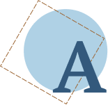

потом я вскочил с постели как был, в рубахе. Я вскочил на стол, взял с полки пароходик. Сразу руками понял, что он железный, совсем настоящий. Я прижал его к уху и стал слушать: не шевелятся ли? Но они, конечно, примолкли. Поняли, что я схватил ихний пароход. Ага! Сидите там на лавочке и примолкли, как мыши. Я слез со стола и стал трясти пароходик. Они стряхнутся, не усидят на лавках, и я слышу, как они там болтаются.Но внутри было тихо.
Я понял: они сидят на лавках, ноги поджали и руками что есть сил уцепились в сиденья. Сидят как приклеенные.
Ага! Так погодите же. Я подковырну и приподниму палубу. И вас всех там накрою. Я стал доставать из буфета столовый нож, но глаз не спускал с пароходика, чтоб не выскочили человечки. Я стал подковыривать палубу. Ух, как плотно всё заделано. Наконец удалось немножко подсунуть нож. Но мачты поднимались вместе с палубой. А мачтам не давали подниматься эти верёвочные лесенки, что шли от мачт к бортам. Их надо было отрезать – иначе никак. Я на миг остановился. Всего только на миг. Но сейчас же торопливой рукой стал резать эти лесенки. Пилил их тупым ножом. Готово, все они повисли, мачты свободны. Я стал ножом приподнимать палубу. Я боялся сразу дать большую щель. Они бросятся все сразу и разбегутся. Я оставил щёлку, чтобы пролезть одному. Он полезет, а я его – хлоп! – и захлопну, как жука в ладони. Я ждал и держал руку наготове – схватить.